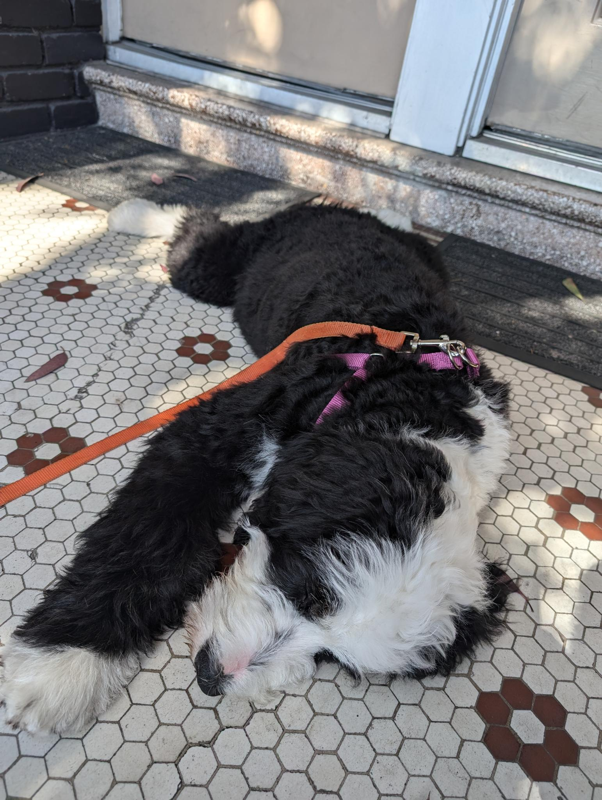

My first post
Well, this is awkward, I have never written a personal blog before. I guess hi, thanks for making it over here, and nice to meet you.
I am an software engineer, I live in San Francisco and I have an adorable 5 month old puppy I take care of full time. I also have a day job, which often stretches into the evening hours.
You’ve read this far, so here is a picture of her passed out in front of my house:

She was too tired to make it up 35 steps, so I let her take a quick nap.
Things I might write about in the future:
- My dog
- My job
- Random engineering projects
Cheers!